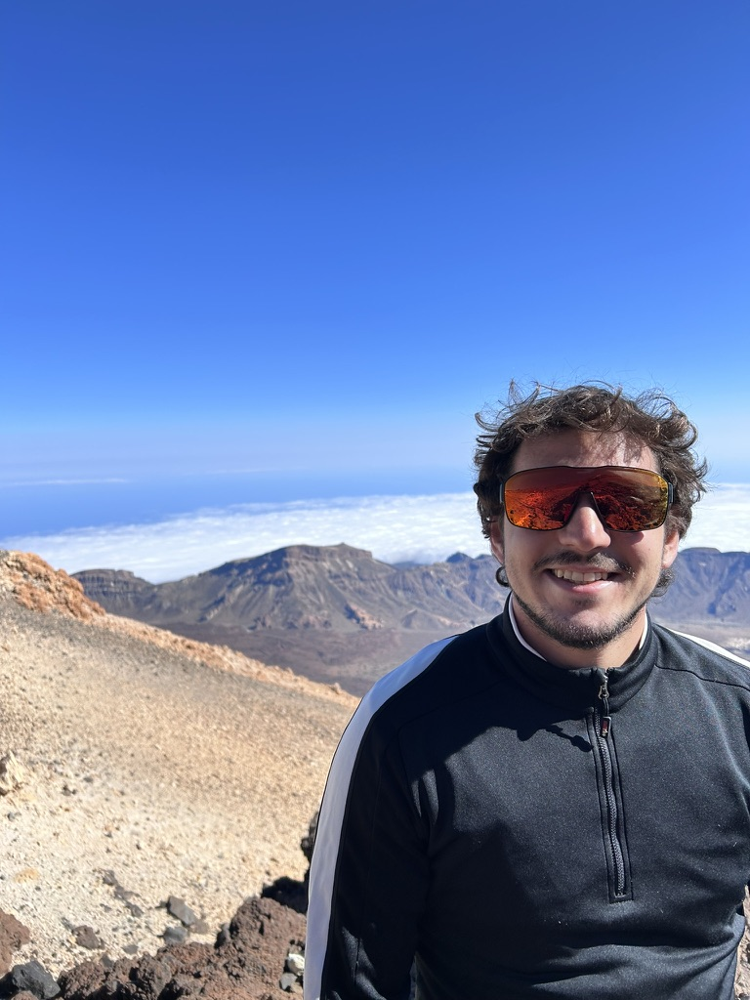
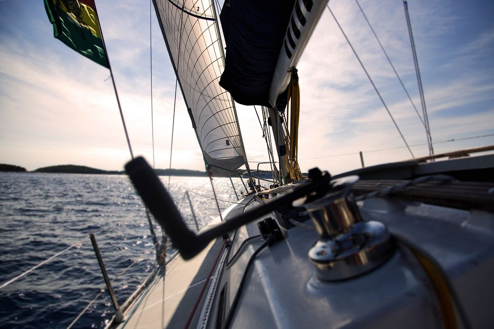

Bribes or bullets? The dual channels of organized crime influence on local public spending
Under review · Public Choice

About
I am an economist from Rome, currently pursuing an M.Res. in Economics at UCLouvain. My research lies in development and public economics, with a focus on the economics of crime: how organized crime shapes local public spending and institutions in Italy.
I am a Research Fellow at the National Council for Economics and Labour (CNEL), where I work on labour economics and policy evaluation, and a Junior Policy Analyst at MET Economia and ContAree, working on industrial economics and firm performance. I am also a Research Assistant to Prof. Giorgio d’Agostino at Roma Tre University. Previously, I interned at Cassa Depositi e Prestiti and in the Economic Studies Division of CONSOB.
Research Interests
- Development Economics
- Macroeconomics
- Public Economics
- Economics of Crime
Current Work
Outside Work

I am a volunteer youth leader with the Guide e Scouts d’Europa Cattolici, serving as provincial lead in Rome for the Scouts branch, and a former competitive épée fencer.